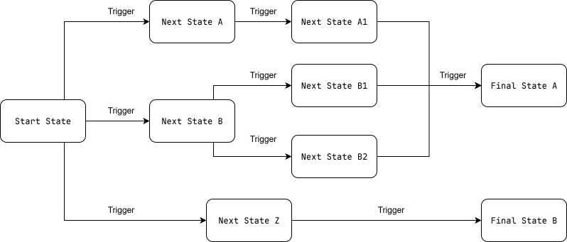
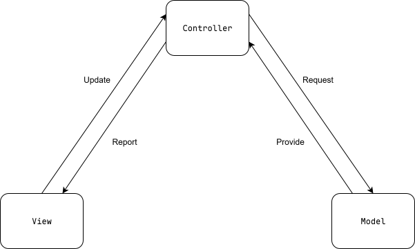

ERA-Engine (Godot) 的设计
设计原则
有限状态机 (FSM)
有限状态机 (Finite State Machine, FSM) 是一个由有限数量的状态组成的系统，通过在不同状态之间转换来运行。这是一个用于设计计算机程序和顺序逻辑过程的计算模型。
在这样的模型 (或者说程序) 中，所有的数据、状态和其他信息都被称之为状态 (state)，在任何一个给定的时刻，系统总是只有有限个可能的状态——这也是这一架构被称为有限状态机的原因。

ERA-Engine (Godot) 将 FSM 模式植入系统，为 ERA 和 类ERA 游戏提供了全新的编程模式: FSM 模式。
在 ERA-Engine 中，任何状态信息 (如界面的布局和显示内容，角色的状态等) 被抽象为状态 state, 状态间的转换则可称为转置 transition: UI的变换 (如某个特定按钮的消失或出现、页面的切换等)，游戏进度的推进，诸如此类。因此，事实上，就如有限状态机所说的，在这一模式下，游戏本身的处理和推进本质上也可理解为不同状态 state 之间的切换。
MVC 模式
模型-视图-控制器 (Model-View-Controller, MVC) 是一种设计模式，用于将应用程序分为三个主要部分：模型、视图和控制器。

通俗而言，视图 view 是用户所见的内容，模型 model 是用户所操作的数据，控制器 controller 则是用户和视图、模型之间的桥梁，程序运行的逻辑。在视图 view 更新时，控制器 controller 会执行主要逻辑和处理，在模型 model 中查询和更新数据，并且将之返回给视图 view，从而使用户看到操作或变化的结果。
通过这样的流程，程序可以被拆分为三个模块，从而帮助作者厘清思路，令代码结构更模块化，代码和程序更加稳定可靠。
系统架构
概览
总得来说，在 ERA-Engine (Godot) 中创作游戏，你需要关注一下两个主要的部分：
状态 (State): 界面的布置和内容，角色物品等的状态数据 (Data): 所有的数据文件，包括角色character、口上kojo、物品item等
随后，基于这二者，你可以自由组织不同状态下界面显示单元UI Unit的排布，以及基于有限状态机的计算、转换，进而构成整个游戏的运行逻辑。
Tip
想要快速开始？看看入门教程吧！